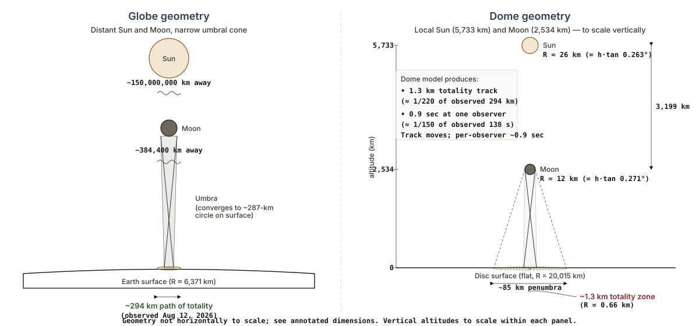
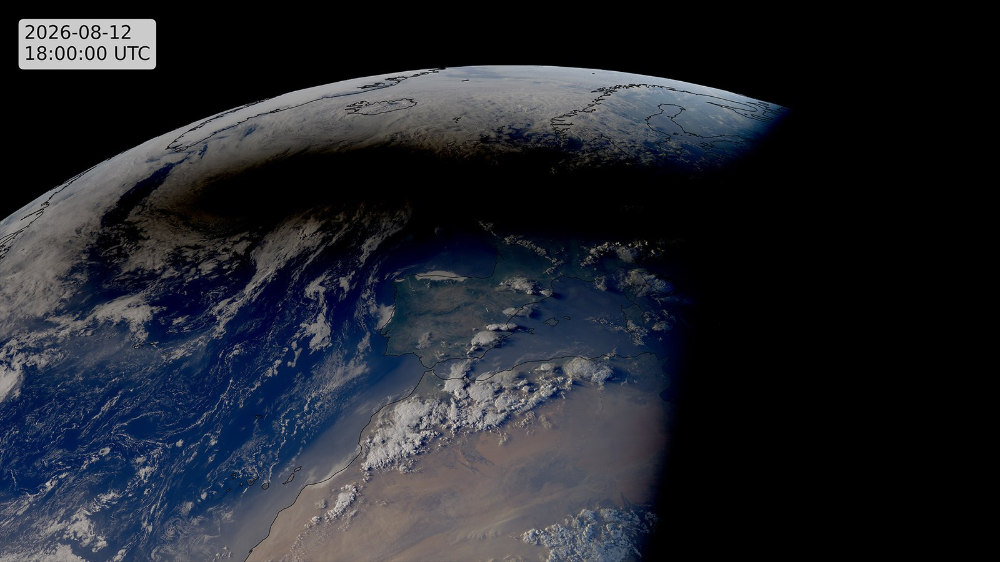

Fun With Science / Dome Review / Eclipse 2026
The geometry of the shadow, and where it falls — Greenland, Iceland, Spain.
On 12 August 2026 the Moon's shadow sweeps from the Arctic down across Greenland, Iceland and northern Spain. The remarkable part isn't the eclipse itself — it's that its track was worked out decades ago from three bodies, an inverse-square law and a sphere spinning under its own shadow. That track was printed years before the event, accurate to the second and the kilometre. This page checks it — and a competing flat-dome geometry — against what the eclipse actually did.
Standard geometry corroboratedDome model falsified
What the 12 August 2026 eclipse settled
The eclipse arrived on the track standard physics drew for it — computed from three bodies, an inverse-square law, and a sphere turning under its own shadow. Months earlier, on 2 May 2026, we froze and cryptographically timestamped a second set of numbers: what a specific flat-dome model (V51.1, at a pinned commit) is forced to predict for this same eclipse, using the dome's own published Sun and Moon altitudes. Those numbers were not close — and the failure can be shown using nothing but the dome's own arithmetic.
| Measurement | The dome's own geometry forces | Standard physics predicted — and the eclipse delivered | Off by |
|---|---|---|---|
| Width of the totality path | 1.317 kmDerived from the dome's hSun = 5,733 km, hMoon = 2,534 km — claim B2-G-001 | 294 km predicted (~290 km satellite-measured, within the pre-registered ±20 km tolerance)NASA SE2026Aug12T path table, greatest eclipse 17:45:53 UT — claim B1-G-001; ~290 km per EUMETSAT Meteosat-12 imaging, within OBS-D-01 ±20 km tolerance | ≈ 223× |
| Maximum duration of totality | ~0.9 s (≤ 7 s, most generous)Moon crosses the 1.317 km strip at the dome's own rim speed ~87 km/min — claim B2-G-003 | 59–138 s (near-limit edge to central-line max)NASA path table, greatest-duration entry 2 m 18 s / 138.2 s at greatest eclipse; ~59 s near-limit minimum observed at Reykjavik, Iceland (path's northern edge) — claim B1-G-002 | 8–138× |
| Of the dome's own 9 named eclipse stations, how many fall inside the dome's own shadow | 0 of 9Dome's ~42 km-radius penumbra ring projected on its own disc — claim B2-G-004 | all 9 lie on the real pathNASA local-circumstances at each station's coordinates | — |

The sharpest tell is internal. The dome's own prediction page names nine INTERMAGNET stations as sitting on the path of totality. Run those same nine stations through the dome's own geometry — a totality spot 1.3 km wide, a penumbra ring only ~42 km in radius — and zero of the nine fall inside it. The dome's published station list only makes sense on the very globe path it is simultaneously arguing against.
You did not need a satellite to see this fail: two minutes of totality, observed from inhabited ground across Iceland and northern Spain, already refutes a one-second, one-kilometre shadow. Geostationary weather satellites (Meteosat, GOES) and the DSCOVR/EPIC deep-space camera additionally imaged the umbra from above — see the EUMETSAT Meteosat-12 image of the week and the Forbes multi-satellite photo essay; one such frame — Meteosat-12's — is reproduced below.
Provenance: the numbers on both sides were pre-registered in predictions/eclipse-2026-08-12-predictions.json and OpenTimestamps-anchored to the Bitcoin blockchain on 2 May 2026 — roughly 102 days before the eclipse — against pinned commits of both this review and the dome's own repository. A scored, timestamped forecast, not a hindsight fit; neither side can move the goalposts after the fact. The geometric verdict is settled. A separate, independent magnetic test (INTERMAGNET data at the dome's nine stations plus five pre-committed control stations) was registered for a +30-day evaluation (~11 September 2026) and is deliberately left open until then.
Check it yourself: the frozen prediction file (every value above, with its source) · NASA path table · NASA Besselian elements · the full geometric trilemma (§4.2.7) · the dome's own prediction page

The path of totality is the headline: the ~294 km-wide track of full darkness fell exactly where the pre-registered geometry said it would. But every eclipse has a second feature that makes the same point from independent geometry — and it is arguably the stronger one, because it never asks what the eclipsing object is. It works whether you call it the Moon or reach for the hypothetical dark "third body" some flat-earth models invoke. All it uses is the size of the shadow's soft edge: the partial eclipse.
On 12 August a partial eclipse — the Sun visibly bitten into, but not fully covered — was seen across essentially all of Europe and the high Arctic. The United Kingdom, well over a thousand kilometres from the central line, still saw the Sun roughly 90% covered (Hartland 88%, claim B1-G-005). That soft outer shadow, the penumbra, runs about 6,000–7,000 km across. So the real shadow is a sharp 294 km core sitting inside a fuzzy fringe more than twenty times wider.
That ratio is the tell. How far a shadow fans out — from its hard core to its soft edge — is set by one thing only: how far the light source sits beyond the object casting the shadow. A nearby lamp throws a shadow that flares wide fast; the distant Sun throws nearly parallel shadows that barely spread at all. Fix the Sun at the dome's stated height of 5,733 km and ask what single object could throw a 294 km core wrapped in a continent-sized fringe:
| Where the eclipsing object would sit | How big it looks beside the Sun | Core shadow (umbra), tuned to 294 km | Widest partial eclipse (penumbra) it can cast |
|---|---|---|---|
| the dome's own Moon height, 2,534 km | 8× the Sun's width | 294 km | ~380 km |
| 5,000 km up | 1.8× | 294 km | ~1,000 km |
| ~5,620 km — within ~110 km of the Sun | ~1.1× | 294 km | ~6,300 km (continental) |
| Observed, 12 Aug 2026 | ≈1.03× (just covers the Sun) | 294 km | ~6,000–7,000 km — all of Europe |
Penumbra spans use exact ray geometry, and treat the Sun as a sphere — which we can see it is. The eclipsing object's shape is not known, so it is worth checking both: modelled as a sphere it must sit ~110 km below the Sun to throw a continent-sized penumbra; modelled as a flat disc facing down, foreshortening toward the edge of the partial shadow tightens that to ~95 km. Either way the object is pressed to within ~100 km of the Sun, so the conclusion does not depend on its shape (and the tiny umbra column is unaffected by either choice).
Only the object jammed against the Sun works. A body at any honest height — the dome's own 2,534 km, or anywhere a distinct object could plausibly sit — throws a partial shadow a few hundred kilometres wide, not a few thousand. To make the partial eclipse span a continent, the geometry forces the object up to within ~110 km of the Sun: no longer a moon or a planet, just a disc pressed against the Sun's underside. That is the same conclusion the path-width argument reached — arrived at again here without ever assuming the object looks like the Moon.
This is why the penumbra is the cleaner kill. The path-of-totality result can be met with "the Moon is simply at some other height," and the total-versus-annular detail waved off with "it's a special dark body." The partial eclipse answers both objections at once, because it asks only one question: how far from the path did people see the Sun partly covered? A continent's worth of partial eclipse can only be cast when the source and the occulter are both, effectively, very far away — which is the globe, not the dome.
Circumstances and path data: NASA — 12 Aug 2026 total solar eclipse · ESA global map · NASA GSFC eclipse office. Interactive local-time viewers (further viewing): timeanddate.